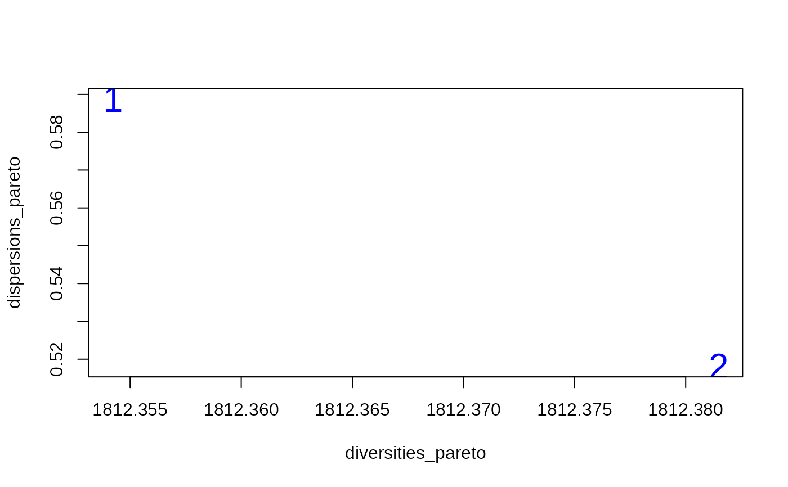
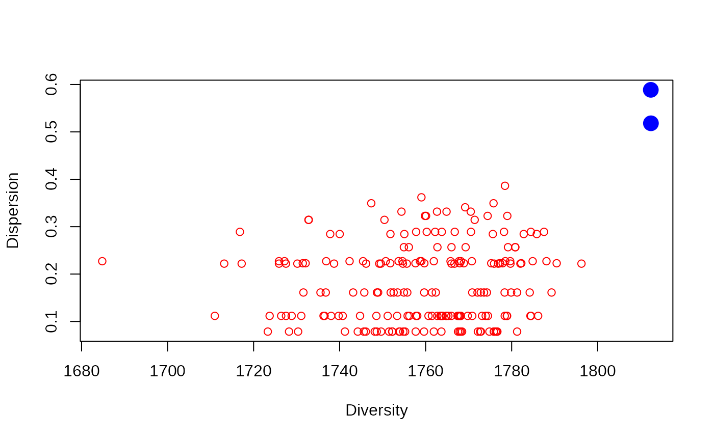

R/bicriterion_iterated_local_search_call.R
bicriterion_anticlustering.RdThis function implements the bicriterion iterated local search heuristic (BILS) for anticlustering by Brusco, Cradit, and Steinley (2020; <doi:10.1111/bmsp.12186>). The description of the algorithm is given in Section 3 of their paper (in particular, see the pseudocode in their Figure 2).
The data input. Can be one of two structures: (1) A
feature matrix where rows correspond to elements and columns
correspond to variables (a single numeric variable can be
passed as a vector). (2) An N x N matrix dissimilarity matrix;
can be an object of class dist (e.g., returned by
dist or as.dist) or a matrix
where the entries of the upper and lower triangular matrix
represent pairwise dissimilarities.
How many anticlusters should be created. Alternatively:
(a) A vector describing the size of each group, or (b) a vector
of length nrow(x) describing how elements are assigned
to anticlusters before the optimization starts.
The desired number of restarts for the BILS algorithm. By default, both phases of the BILS algorithm are performed once.
Optional argument, a vector of weights defining the relative importance of dispersion and diversity (0 <= W <= 1). See details.
Optional argument, specifies probability of swapping elements during the iterated local search. See examples.
A matrix of anticlustering partitions (i.e., the
approximated pareto set). Each row corresponds to a partition,
each column corresponds to an input element.
The bicriterion algorithm by Brusco, Cradit, and Steinley (2020)
aims to simultaneously optimize the two anticlustering criteria:
the diversity_objective and the
dispersion_objective. It returns a list of partitions
that approximate the pareto set of efficient solutions across both
criteria. By considering both the diversity and dispersion, this
algorithm is well-suited for maximizing overall within-group
heterogeneity. To select a partition among the approximated pareto
set, it is reasonable to plot the objectives for each partition
(see Examples).
The arguments R, W and Xi are named for
consistency with Brusco et al. (2020). The argument K is
used for consistency with other functions in anticlust; Brusco et
al. used `G` to denote the number of groups. However, note that
K can not only be used to denote the number of equal-sized
groups, but also to specify group sizes, as in
anticlustering.
The argument R denotes the number of restarts of the search
heuristic. The argument W denotes the possible weights given
to the diversity criterion in a given run of the search
heuristic. In each run, the a weight is randomly selected from the
vector W. As default values, we use the weights that Brusco
et al. used in their analyses. All values in w have to be in
[0, 1]; larger values indicate that diversity is more important,
whereas smaller values indicate that dispersion is more important;
w = .5 implies the same weight for both criteria. The
argument Xi is the probability that an element is swapped
during the iterated local search (specifically, Xi has to be a
vector of length 2, denoting the range of a uniform distribution
from which the probability of swapping is selected).
If the data input x is a feature matrix (that is: each row
is a "case" and each column is a "variable"), a matrix of the
Euclidean distances is computed as input to the algorithm. If a
different measure of dissimilarity is preferred, you may pass a
self-generated dissimiliarity matrix via the argument x.
For technical reasons, the pareto set returned by this function has a limit of 500 partitions. Usually however, the algorithm usually finds much fewer partitions. There is one following exception: We do not recommend to use this method when the input data is one-dimensional where the algorithm may identify too many equivalent partitions causing it to run very slowly (see section 5.6 in Breuer, 2020).
Brusco, M. J., Cradit, J. D., & Steinley, D. (2020). Combining diversity and dispersion criteria for anticlustering: A bicriterion approach. British Journal of Mathematical and Statistical Psychology, 73, 275-396. https://doi.org/10.1111/bmsp.12186
Breuer (2020). Using anticlustering to maximize diversity and dispersion: Comparing exact and heuristic approaches. Bachelor thesis.
# Generate some random data
M <- 3
N <- 80
K <- 4
data <- matrix(rnorm(N * M), ncol = M)
# Perform bicriterion algorithm, use 200 repetitions
pareto_set <- bicriterion_anticlustering(data, K = K, R = 200)
# Compute objectives for all solutions
diversities_pareto <- apply(pareto_set, 1, diversity_objective, x = data)
dispersions_pareto <- apply(pareto_set, 1, dispersion_objective, x = data)
# Plot the pareto set
plot(
diversities_pareto,
dispersions_pareto,
col = "blue",
cex = 2,
pch = as.character(1:NROW(pareto_set))
)

# Get some random solutions for comparison
rnd_solutions <- t(replicate(n = 200, sample(pareto_set[1, ])))
# Compute objectives for all random solutions
diversities_rnd <- apply(rnd_solutions, 1, diversity_objective, x = data)
dispersions_rnd <- apply(rnd_solutions, 1, dispersion_objective, x = data)
# Plot random solutions and pareto set. Random solutions are far away
# from the good solutions in pareto set
plot(
diversities_rnd, dispersions_rnd,
col = "red",
xlab = "Diversity",
ylab = "Dispersion",
ylim = c(
min(dispersions_rnd, dispersions_pareto),
max(dispersions_rnd, dispersions_pareto)
),
xlim = c(
min(diversities_rnd, diversities_pareto),
max(diversities_rnd, diversities_pareto)
)
)
# Add approximated pareto set from bicriterion algorithm:
points(diversities_pareto, dispersions_pareto, col = "blue", cex = 2, pch = 19)
